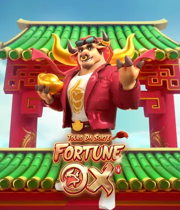
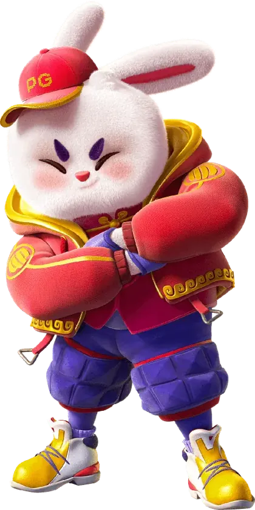
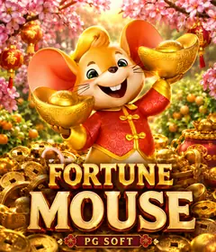
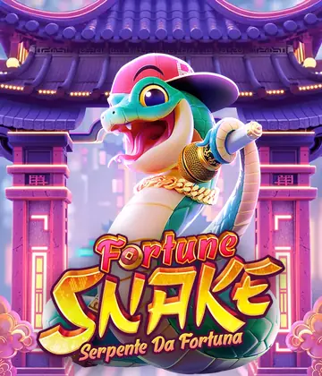
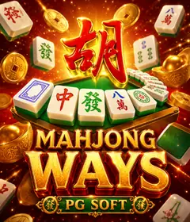
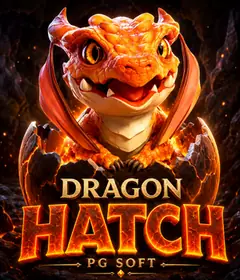
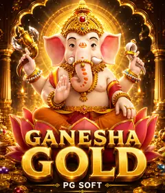

100 giros no Fortune Tiger
Deposite a partir de R$ 50 e receba 100 giros grátis. Gire a roleta da campanha e veja seu prêmio antes de criar a conta.
Giros válidos por 7 dias · ganhos sem rollover · uma vez por CPFGirar a roletaSeis animais, seis jogos e um mesmo jeito simples de jogar. Role a página e conheça a série Fortune capítulo por capítulo.
Capítulo 1 · Tigre · Fortune Tiger
Foi ele quem começou a série. Grade de 3x3, cinco linhas e um tigre curinga que, a qualquer giro, pode ativar o recurso Fortune Tiger: os rolos giram de novo com um único símbolo em jogo até sair um prêmio. Se os nove espaços forem preenchidos, o prêmio do giro vale dez vezes mais.
Capítulo 2 · Touro · Fortune Ox
O touro dourado trouxe a grade 3-4-3 com dez linhas. No recurso Fortune Ox, os rolos laterais travam um símbolo e o rolo do meio gira de novo até formar um prêmio. Com a grade cheia de símbolos pagantes, o giro também vale dez vezes mais.

Capítulo 3 · Coelho · Fortune Rabbit
No Fortune Rabbit, símbolos de prêmio trazem valores próprios e, com cinco ou mais na tela, todos são pagos de uma vez. No recurso especial, são oito giros em que só aparecem símbolos de prêmio e espaços vazios. É o maior teto da família: 5.000x.


Capítulo 4 · Rato · Fortune Mouse
O Fortune Mouse mantém a grade enxuta de 3x3 com cinco linhas. No recurso Fortune Mouse, o rolo do meio fica todo de curingas e os rolos laterais giram de novo até sair um prêmio. É o mais tranquilo da série, com teto de 1.000x.

Capítulo 5 · Dragão · Fortune Dragon
O dragão voltou à grade de 3x3 e trouxe giros especiais com multiplicadores de 2x, 5x ou 10x. Os multiplicadores que caem se somam e valem sobre o prêmio total do giro. Teto de 2.500x.

Capítulo 6 · Serpente · Fortune Snake
O capítulo mais recente da série chegou com a serpente. Como é um lançamento novo, a grade, o recurso especial e os números oficiais estão na tela de regras dentro do jogo: confira antes da primeira rodada.

Campanhas da plataforma
Deposite a partir de R$ 50 e receba 100 giros grátis. Gire a roleta da campanha e veja seu prêmio antes de criar a conta.
Giros válidos por 7 dias · ganhos sem rollover · uma vez por CPFGirar a roletaInstale o app do site no celular e ganhe 50 giros no Fortune Tiger no depósito a partir de R$ 10, via Pix.
Uma vez por jogador e por CPF · giros válidos por 7 dias · ganhos sem rolloverVer bônus do app8 mini games (roleta, baú, raspadinha, plinko e mais) com uma jogada grátis por dia. Os prêmios em bônus caem direto na carteira.
Sem depósito para jogar · uma jogada por dia em cada jogoJogar mini games18+ · Regras completas em cada campanha. Jogue com responsabilidade.
Três perguntas rápidas. No fim, uma sugestão de jogo para começar.
Dados informados pela PG Soft. Onde o número oficial não é conhecido, a tabela mostra n/d: confira na tela de regras do jogo.
| Item | Fortune Tiger | Fortune Ox | Fortune Rabbit | Fortune Mouse | Fortune Dragon | Fortune Snake |
|---|---|---|---|---|---|---|
| Grade | 3x3 | 3-4-3 | 3-4-3 | 3x3 | 3x3 | n/d |
| Linhas | 5 linhas | 10 linhas | 10 linhas | 5 linhas | 5 linhas | n/d |
| Ganho máximo | 2.500x | 2.000x | 5.000x | 1.000x | 2.500x | n/d |
| RTP teórico | 96,81% | 96,75% | 96,75% | 96,96% | 96,74% | n/d |
| Recurso especial | Recurso Fortune Tiger e multiplicador x10 | Rolo do meio gira de novo e multiplicador x10 | Símbolos de prêmio e 8 giros especiais | Rolo do meio com curingas | Multiplicadores 2x, 5x e 10x somados | n/d |
Mais jogos da PG Soft para depois do festival.

Mahjong WaysPeças de mahjong em cascata e multiplicador que sobe a cada cascata. RTP teórico 96,92%. Mahjong Ways 2A continuação do Mahjong Ways, com mais formas de ganhar. RTP teórico 96,95%.Wild BanditoBandidos do velho oeste e símbolos dourados que viram curingas. RTP teórico 96,73%.Lucky NekoO gato da sorte japonês e símbolos com moldura dourada que viram curingas. RTP teórico 96,73%.
Mahjong Ways 2A continuação do Mahjong Ways, com mais formas de ganhar. RTP teórico 96,95%.Wild BanditoBandidos do velho oeste e símbolos dourados que viram curingas. RTP teórico 96,73%.Lucky NekoO gato da sorte japonês e símbolos com moldura dourada que viram curingas. RTP teórico 96,73%.
Dragon HatchGrade de clusters em que os dragões ativam recursos conforme as cascatas. RTP teórico 96,83%.Treasures of AztecTemplo asteca com cascatas e multiplicador crescente. RTP teórico 96,71%.Cash ManiaLançamento recente da PG Soft com tema de dinheiro. Recursos na tela de regras.
Ganesha GoldTema indiano com Ganesha e giros grátis. RTP teórico 96,08%.Defina um valor por sessão e aproveite o festival.
Criar conta grátis